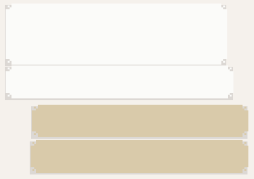

Unos minutos más tarde, su respuesta.

FEDE
Imposible, viajó en 1924 a Montevideo.
Conoció al Negro Andrade en París, y le propuso hacer un espectáculo juntos.
Además de un cra, era un bailarín impresionante.
Esa mujer que está en el Conte Verde no es Josephine Baker, es alguien que se hace pasar por ella.
JAVI
Buscá info sobre Josephine y el espionaje para Francia
Me fui, no quiero quedarme sin batería, lo dejo apagado y lo prendo un poco para ver si mandaste algo.
Mira fijamente la pantalla y después apaga el celular y se siente bastante solo.
¿Qué significa que esa mujer se hace pasar por Josephine Baker?
¿Y cómo nadie se da cuenta?
Bueno, no hay Instagram ni Facebook ni Twitter ni nada.
En su época, se hubiera sabido al toque.
¡Y qué lío se hubiera armado!
Pero: ¿por qué alguien se hace pasar por ella?
Eso es sospechoso.
Ha de haber alguna explicación en alguna parte, pero se inquieta.
Ya es suficiente con estar en el Conte Verde, en 1930 —la palabra siglo realmente lo impresiona—, como para entender por qué alguien se haría pasar por una personalidad tan famosa y conocida.
A menos que ¿Y si se relaciona con la actividad que Fede mencionó de la Baker,